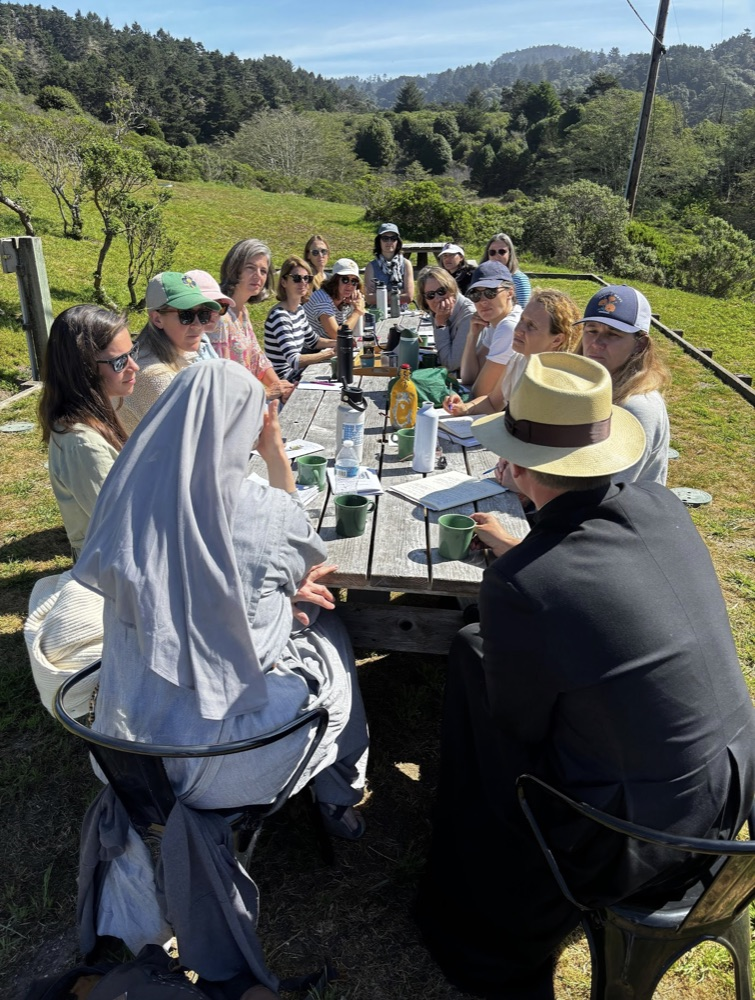

Les prochaines marches
MARCHE DES FEMMES
12–14 mars 2027
MARCHE DES HOMMES
14–16 mai 2027
Dates annoncées pour 2027. Les lieux, les modalités et les inscriptions restent à préciser auprès de l’équipe.
Recevoir les informations pratiquesRETOUR SUR 2026
La marche des hommes à Big Sur
Un week-end sur la côte californienne, entre camping, randonnée et prière. Les participants ont partagé un temps de pause et des échanges pour nourrir leur foi.
RETOUR SUR 2026
Un pèlerinage pour les femmes
Une vingtaine de participantes ont marché autour de la figure de Marie. Accompagnées par Sœur Marie et le Père Damien, elles ont alterné enseignements, célébrations et échanges fraternels.

D’autres chemins parcourus
Les hommes à Angel Island · 2025
Les 26 et 27 avril, seize hommes se sont retrouvés pour marcher, prier et échanger sur leur chemin de foi.
Les femmes à Point Reyes · 2024
Un week-end de retraite accompagné par les Pères Johannes et David, avec des randonnées, des messes et des temps de partage.
Envie de participer ?
Pour rejoindre une prochaine marche ou aider à l’organisation, contactez l’équipe. Les nouvelles sont aussi diffusées dans la newsletter.